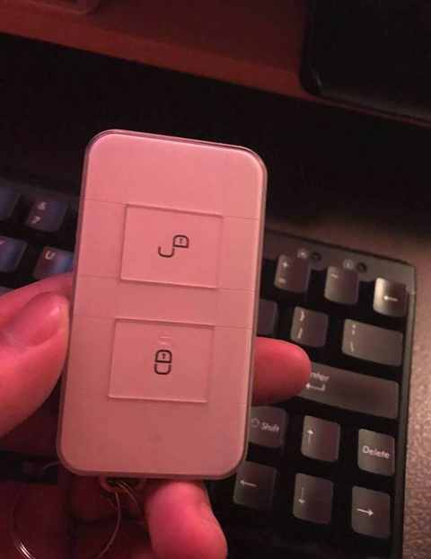
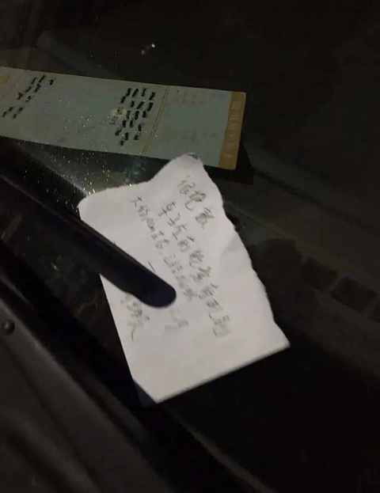

8年驾龄复盘：新手期的每一次手忙脚乱，都成了现在我安全驾驶的“肌肉记忆”
一、谁都是从新手过来的
最近一年开车会比之前每年都多不少，以往每年 1w 公里左右，今年是肯定至少有 2w 公里。
或许真的是年龄渐长了之后，人会止不住的怀旧，最近会时不时会想起来第一年开车发生的一些事情。

我的新手期可太有节目了，简单举两个例子，都是在提车第一周发生的事情：
1️⃣ 提车一天把车开爆胎
出隧道的时候，距离判断失误，后轮压到马路牙子，估计是侧面接触的，直接爆胎，声音很大的那种。
好在心理素质还行，听到蹦了一声之后车子震动了一些并想起报警声，仪表盘显示红色提醒， 随即靠边停车。
然后电话联系4s 店的工作人员，在他们的指导下找到了崭新的千斤顶和备胎，我和同学两个人都手忙脚乱，一张照片都没有拍，仅仅是研究怎么把轮子拆下来就比划了挺久。
幸运的是一个过来看热闹的大叔是大货车司机，他帮忙把备胎安装了上去，要不然我和同学两个人不知道得弄多久才行。
在吸取了这次的教训之后，对马路牙子和路肩之类的障碍物会更加敬畏一些，情愿慢一点稳妥点，操作上会更加严谨，必要的时候一定通过 360 度全景影像仔细查看周围环境。
2️⃣ 侧方停车把别人车刮了
周末沃尔玛的停车场甚是繁忙，找车位本来就不容易，老婆好不容易找到一个侧方的车位，我停了很久都没有停进去，旁边等的车都开始催了。
这个时候我不紧张是不可能的，老婆也在指挥，一不小心就擦到了后面车的车头勉强停进去侧方的车位。
对方车上也没有联系方式，就找了一个纸写上了具体情况和联系方式。

这位车主后续联系了我，并表示很意外会收到字条，说等评估好费用和我说，但后续并没有联系我。
可能是保险赠送有补漆券又或者觉得我比较实诚也就不和我计较了。
几年后的某一天去开车的时候，发现挡风玻璃上有一个字条，同时也发现了明显的剐蹭痕迹，是有人停车的时候蹭到了我的车，留给我的字条上有对方保险公司的联系方式，最终保险公司的工作人员上门定损为需要补两个漆面。
二、找到适合自己练车的时间
想快速建立 对车的感知能力，只能靠多开，同时也要多总结和调整。
当时刚提车的时候尝试过早上早点起来练车，开了几次发现早高峰比预计的来的更早一些，最终还是定在了晚上 9 点后的时间。
这个时间车不多不少，道路的车流量对新手十分友好，开到某个环线绕一圈再出环线走走辅道，能比较好的建立对车的感知能力。
晚上练车有一个小缺点是路线的线看的没有白天清晰，偶尔会出现开错道的情况，好在车少能及时变换回来。
适合每个人练车的时间都不太一样，毕竟大家所处的位置和工作安排都不一样。
在前期要快速找到这个时间，然后多加练习。
现在比较好的是：有专门的陪驾服务，按小时付费，能提供十分个性化的服务。
从我现在的视角出发，如果给当时的我选陪驾服务，我可能会倾向于先把停车好好练练，找多个停车场各种车位都试试看。
其次，是把热门的环线和高架路都开几遍，熟悉下各个出入口的基本情况。
第三，大概就是火车站、机场、汽车站之类的场所，在开车过一遍做到心里有数。
三、在遵守交规的前提下注重通行效率
在路上开车，遵守交规是必须做到的。
因为做不到，会扣分罚款，养成不良习惯之后还容易有一些不必要的小剐蹭。
我更想强调的是：注重通行效率！
几乎每天早上送娃上学的途中都会飙几句F开头的单词，因为每个关键的路口都有几个驾驶策略谨慎到完全摒弃通行效率的司机。
简单举几个例子：
① 在无非机动车混行的路口缓慢起步
本来 20 秒的绿灯能过七八辆车，这位司机迟疑个几秒就少过两辆车，被堵过的一定懂这种痛！
② 限速60km的畅通道路只开30-40km
跟在这种车后面真的很难，变道的话需要等后面的车先开过去，不变道又憋的慌
③ 与旁边的车并行未拉开安全距离
车辆并行对其他车辆的影响在于没有了变化的空间，以至于有时候出现想变道但完全变不过去的情况。
在日常的驾驶中，相较过于谨慎的驾驶策略，其实注重通行效率反而能带来更大的安全保障，同时也能给予其他司机更多的道路资源。
近期文章
一个中年人的2025年桐庐半马赛后复盘：我的 5 个收获
桐庐半马前24小时：安于日常，拥抱期待
一个中年男人的140次发文，换来第一篇的10万+
为什么说放弃Apple Watch很容易，而真正考验人的是下一块智能手表的选择？
运动后总酸痛？这4个家常小物件，是放松肌肉的“隐形神器”
我的电车购买逻辑：用100kWh大电池的“确定性”，替代三电优化的“不确定性”
从前，有一个笨小孩，他的武器叫“笨功夫”
中年人提高跑量的意外之喜：最大摄氧量首次突破62！
告别选择困难症！翻遍留言区整理的宝藏跑步装备清单！
一双 “问题” 跑鞋带来的顿悟：问题的答案藏在细节里……